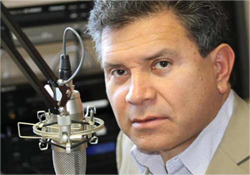

Nosotros
historia
Ondas de vida es una estación fundada en California, Estados Unidos por el Pastor Héctor Manzo quien es oriundo de la República Mexicana.
La primera estación ubicada en el área de Hesperia California y el éxito de la misma la ha llevado a ser establecida en diez frecuencias distintas en los estados de California, Nevada y Oregon.
Ondas de vida ha tenido un crecimiento acelerado por lo que ahora en equipo con Marcha de Gloria y el Doctor Carlos Quiroa las estaciones llegarán a establecerse a todo el territorio nacional.
Misión
Ser una estación local que ofrece a la comunidad la mejor programación con noticias, entretenimiento, notas de salud, cultura, música y conferencias con un alto valor ético y moral a favor de la familia.
Visión
Alcanzar a personas en medio de situaciones de problemas y guiarlos para llevar una vida mejor.
Valores
-Honestidad
-Respeto
-Lealtad
Pastores
Doctor Carlos Quiroa

Carlos Quiroa quién nació en el país de Guatemala, a la edad de 18 años fue guiado por su abuelo a Jesús.
Don Marcelino Quiroa, abuelo de Carlos, fue pastor durante 56 años. Con la ayuda de Dios estableció unas 250 congregaciones, en lugares donde no existía iglesia en Guatemala.
Los primeros dos años fue capacitado por “Cruzada Estudiantil y Profesional para Cristo”, como un coordinador de proyectos evangelísticos, además como Evangelista. Este tiempo fue propicio para alcanzar, con el evangelio, aproximadamente 500,000 personas.
En 1985 inicia su carrera teológica en el Seminario Teológico Centroamericano en Guatemala. Cinco años después, llamado por Dios e invitado por el Dr. Luís Palau, se une para ser parte de este ministerio de evangelización, y durante 9 años junto a su esposa Ingrid, fue responsable de dar dirección al pueblo de Dios en cómo evangelizar a las grandes ciudades, dar capacitación a su pueblo, y de guiar a miles de personas a los pies de Cristo, en Centro América, México y en todo el Continente Americano.
En medio de grandes oportunidades, en 1994 Luís Palau le bendice para dejar el equipo ya que su corazón había sido cautivado por México, el cual atraviesa una de las mayores crisis económicas. En sus propias palabras expresa... “Cada vez que concluíamos un gran evento en México, nuestro corazón se sentía anclado, y salir era doloroso, porque apenas estábamos iniciando”.
Al dejar las cruzadas, y con la visión de alcanzar a todo México y a Latinoamérica levanta una Asociación, sueño que fue impulsado por grandes visionarios y empresarios que creían que una nación como México podía ser transformada por el poder de la palabra de Dios.
Personas como: El Lic. Luis Dávila (De Hombres Cristianos), Lic. Hugo Morales (Universidad Mariano Gálvez), Próspero Morales (Impulsora Lechera Guatemalteca), el gran apoyo de Rubí Estrada (Secretaria Ejecutiva de la Asociación Carlos Quiroa), el respaldo de la Asociación Evangélistica de Luis Palau, el Consejo Apostólico Guatemalteco y la Alianza Evangélica de Guatemala. Fueron instrumentos económicos que sostuvieron el viaje y la evangelización de México en sus primeros años, y que sin duda fueron la columna vertebral de la Asociación Carlos Quiroa.
Carlos, Ingrid, Pablo y Josué Benjamín (sus dos primeros hijos) bajo la dirección del Espíritu Santo, se establecen en México para ayudar en la evangelización nacional. Dios le unió a un grupo de hombres y mujeres iniciando lo que en sus propias palabras define como “La toma de la nación”, en el centro histórico, donde unas 10,000 personas conocieron a Jesús, la Palabra de Salvación se predica en el Norte, Sur y Occidente del país. En 1996, con el apoyo económico de un hombre tocado por Dios, y por primera vez en la historia, se anuncia el Evangelio en la estación más grande de América Latina la “XEW”, donde miles de personas de todos los estatus sociales oían el mensaje de salvación. Impulsando de esta manera un acontecimiento que se haría icónico en México, las llamadas Marchas de Gloria, donde cientos de miles oyen, vienen, creen y confiesan a Jesucristo como su Señor y Salvador. ¡Ahora la visión recorre el mundo entero! Llegando inclusive a Jerusalén
Después de los primeros siete años de estar en su amado México, como recompensa de diversas luchas y batallas, nacen sus hijos más pequeños Victoria y Elías.
El amor por esté país era tan grande que en agosto de 2003 le entregan su nacionalidad mexicana y durante los siguientes ocho años se convirtió en pastor general de la Iglesia Torre Fuerte México en el Distrito Federal, donde a la fecha se alcanzan a muchos y se capacitan para ser enviados a establecer el Reino de Dios, por toda la nación y Latinoamérica.
Durante estos años cambia de nombre la Asociación Carlos Quiroa a Ministerios Buena Tierra, dando cobertura a diversas iglesias en el país como en las naciones y con ello ser guiadas por el Señor Jesucristo y por el Apóstol Carlos a transformar las naciones para la Gloria de Cristo Jesús
Doctor Héctor Manzo
el conferencista Héctor E Manzo, es Pastor y fundador del Centro Cristiano de Fe, en Hesperia CA.
Desde 1985 ha estado vinculado en los medios de comunicación: Fue el co-anfitrión con el popular actor mexicano Manuel López Ochoa, en el destacado programa "Punto de Encuentro".
Por más de 7 años fue locutor de la única estación de radio que existía en el área de Los Angeles CA.
Ha sido productor de programas de radio y anfitrión de programas de televisión.
Desde 1994 ha sido el anunciador oficial del Dr. David Hormachea en el programa "Visión Para Vivir", y ahora "Principios".
Es presidente y fundador de la Cadena Radial Ondas de Vida, que cuenta con 10 diferentes frecuencias en el Estado de California, Nevada y Oregon, y con otras licencias disponibles para poner en el aire.
El conferencista Héctor E Manzo produce el programa "Principios de Vida", cuya duración es de 20 Minutos y se transmite de lunes a viernes.
También produce el mini programa "Diálogo", de dos minutos de duración, y que se transmite de lunes a viernes.
Graduado del Golden Gate Baptist Seminar, cuenta con un Doctorado en Teología del "California Christian University.”
Lic. Pablo Quiroa
Pablo Quiroa quien empieza su ministerio desde corta edad se ha encontrado en los medios como radio desde que tenía cerca de 10 años de edad y después predicando cerca de los 13 años siendo un conferencista a las multitudes, evangelista a las naciones y que tiene una pasión muy grande por la juventud.
Ha participado en eventos de renombre tales como Marcha de Gloria siendo el evangelista oficial de las diversas que hoy en día existen, con un ministerio poderoso pues el Señor lo usa en milagros y sanidades, las señales son sobre él, miles de personas han sido alcanzadas por el Señor a través de compartir el evangelio de Jesús.
Junto a su esposa Yoli son pastores generales de la Iglesia Torre Fuerte que se ubica en la Ciudad de México, trabajando fuertemente con cada una de las personas que llegan para que sus vidas sean restauradas, sanas, libres, prosperadas en todo para que puedan adorar a Dios.
Acciones
En estos veinte años de trayectoria ministerial Carlos Quiroa a dejado claro que Dios quiere transformar a México y con ese fin ha realizado:
- Cruzadas de evangelización en el Centro, Norte y Sur de la Republica Mexicana. Donde se alcanzaron a miles a los pies de Cristo
- Noches de Avivamiento, donde con el apoyo de congregaciones locales, se evangelizó durante días las calles, colonias y avenidas cercanas a la cede del evento. Al finalizar se realizo una noche denominada Noche de Avivamiento donde traían a los enfermos y a los que necesitaban un milagro; Dios usó a Carlos Quiroa para realizar milagros sobrenaturales en cada una de las actividades.
- Tan sólo de hablar de estas dos primeras actividades la gente que se alcanzaba sobrepasaba los millones de personas.
- Marcha de Gloria se convirtió desde 1996 en un acontecimiento donde miles de personas de distintos estratos sociales se concentran para adorar al único Dios todo poderoso. Desde niños, adolescentes, jóvenes, adultos y ancianos recorren una de las arterias principales del Distrito Federal, Reforma y Gandhi y marchan exaltando, alabando y proclamando a Cristo Jesús. Se le ha denominado como “Un encuentro entre el Cielo y la Tierra enadoración a Jesucristo” y la mano de Dios ha estado sobre cada uno de los que participan. Miles recibiendo a Jesucristo como Salvador y también una gran oleada de milagros sobre los que van en sillas de ruedas, con muletas o inclusive llegan en ambulancias para recibir su milagro. Sería difícil cuantificar la cantidad de personas que durante estos veinte años han participado en Marcha de Gloria pero si tenemos claro que desde su primera actividad fueron trecientas personas y en la segunda cuarenta mil y de ahí en adelante se van suman mas cada año llegando hasta estos tiempos en ser un aproximado de ochocientas mil personas.
- Transmitió el evangelio a través de radio 620 AM. y la cadena RASA con el programa “Jesucristo la Respuesta Segura con Carlos Quiroa”, el cual ha servido como una gota de agua en medio del desierto, y muchos reconocen que a través del ministerio que Dios ha entregado al Dr. Quiroa han encontrado la vida que solo Jesús les pudo dar.
- Marcha de Gloria Jerusalén. México e Hispanoamérica se unieron con el propósito de bendecir también la tierra que vio nacer a su Salvador, Jesucristo, y por ello se realizan viajes a Israel para enamorarse mas de esa nación, orar pos su paz como está escrito y velar por ella. Cada año se suma gente de toda la Republica Mexicana, de Estados Unidos, Guatemala, Chile y Argentina. Y en estos tiempos se organizarán Magnos Congresos Proféticos y de Adoración en Tierra Santa, donde hombres de Dios, con una unción profética y de adoración, proclamen el Nombre de Jesucristo en alto, en Jerusalén.
- Parlamento Iberoamericano por Israel, nace a finales de 2015 y fundamentado en lo que esta escrito en Isaías 62. Tiene como propósito levantar en cada ciudad y país representantes del parlamento con la visión, las necesidades y las formas en las que podemos bendecir a Israel. Aunado a esto se tiene como objetivo levantar una red de un millón de personas que permanezcan en oración e intercesión por el pueblo de Israel… “Por amor de Sion no callaré…”(Isaías 62.1a) hasta que el Padre escuche mi clamor por Jerusalem. Además miles viajando a Tierra Santa, llevando alegría, presencia de Dios, caminando por sus calles, conociendo la tierra de promesa, lleven mensajes de paz, que hagan sentir a Israel que no esta sólo y que existen en el mundo personas que velan por ella noche y día. Como acontecimiento especial este año celebraremos nuestro primer Congreso Profético y de Alabanza, esperamos del mundo Hispano de dos mil a tres mil Lideres y pueblo ... “hasta que salga como resplandor su justicia, y su salvación se encienda como una antorcha” (Isaías 62.1b). Cada una de nuestras aportaciones, para bendecir el pueblo son gozo y alegría, creyendo en la promesa de que le bendiga será bendecido. ( Gen. 12:1-2). SERÁS LLAMADA CIUDAD DESEADA; Hoy más que nunca la iglesia debe levantar su voz a las naciones y los Reyes de la Tierra, para que sea guardada de sus enemigos. “El profeta Zacarías expresó que la ciudad que le respalde recibirá de los Cielos lluvia a su debido tiempo y será prospera”.